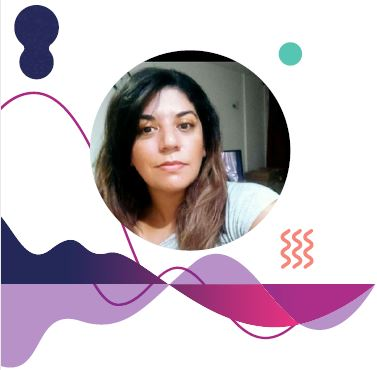

Noelia Ramos
Edad:40
Domicilio :Manzana c Casa 22 Barrio La Bancaria Localidad: Unquillo
Telefono: 3514761390
Experiencia Laboral
Analista Funcional
Universidad Siglo 21 · Jornada completa
mar. 2021 - actualidad · 2 años 5 meses
- Recopilacion y analisis de requerimientos al cliente interno.
- Elaboracion de Epicas , historias de usuario mediante Jira.
- Certificacion de requisitos funcionales
- Documentacion ers ,diagramas de flujo ,casos de uso
- Soporte y capacitacion a los usuarios finales.
- Mejora y creacion de procesos PLSQL e implementacion
- Reporteria
Analista Facturacion-Produccion
Claro Argentina · Jornada completa
sept. 2011 - dic. 2020 · 9 años 4 meses
- Control de procesos Facturacion para negocio Movil/Fija Argentina -Uruguay -paraguay
- Mejora de procesos Automatización e implementacion
- Creacion de tableros y reportes en Microstrategy
- Generación de reporteria en PL/SQL
- Analisis funcional ,pedido y seguimiento de proyectos para nuevos procesos o mejoras.
- Generación de documentación en Confluence.
- Reporteria en Sharepoint
- Gestion con proveedores (Impripost/Correo argentino) Creacion de OC y pagos en SAP
Educacion
Intertron
PL SQL Avanzado
- Objeto vista
- Tablas temporales
- Subconsultas avanzadas
- Jobs triggers ,bloques,procedures
Sobre Mi
Soy analista con mas de 10 años de experiencia ,generando Automatizaciones y mejora continua
de Procesos.
Me considero una persona Pro activa conganas de aprender y emprender nuevos desafíos.
Para mayor informacion dejo mi enlace de Linkedin